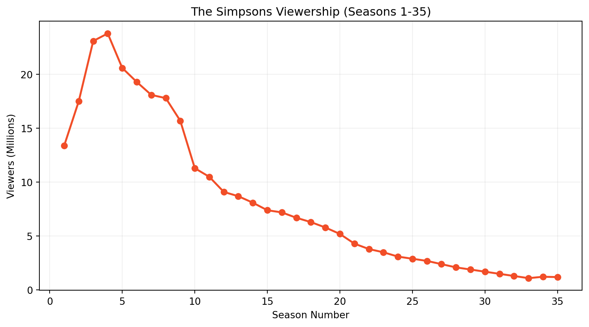
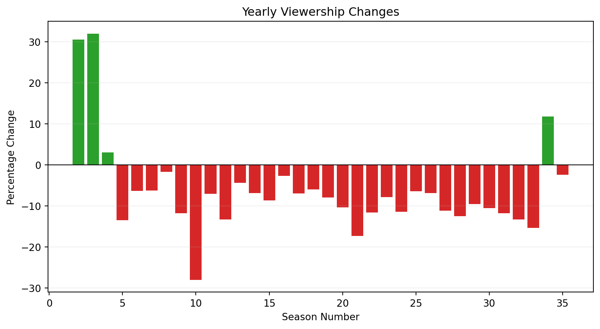

The Simpsons Viewership Analysis
1. Show Description
The Simpsons is an American animated sitcom created by Matt Groening that premiered on December 17, 1989. The series follows the satirical adventures of the Simpson family - Homer, Marge, Bart, Lisa, and Maggie - in the fictional town of Springfield. As the longest-running American scripted primetime television series, it has become a cultural phenomenon.
2. Logo representation
3. Basic Statistics
| Metric | Value |
|---|---|
| Seasons | 36 |
| Episodes | 782 |
| Peak Viewership | 33.6 million (S3E1, 1991) |
| Current Viewership | 1.2 million (S35) |
| IMDb Rating | 8.6/10 |
4. Viewership Trend

5. Yearly Changes

6. Trend Analysis
The viewership data reveals several significant patterns in The Simpsons’ audience trends over its 35-season run:
Peak Performance Era
The show reached its highest popularity during Season 3 (1991-92), averaging 23.1 million viewers per episode. This represented a dramatic 72.4% increase from Season 1’s average, demonstrating the series’ rapid growth in its early years.
Critical Decline Period
The most substantial viewership drop occurred between Seasons 9-10 (1997-99), with a 28.0% decrease in average viewership. This coincided with: - Increased competition from other animated series - Changes in writing staff - Shifting audience preferences
Modern Era Stability
In recent seasons (31-35), the show has stabilized with: - An average of 1.3 million viewers - Seasonal fluctuations of ±15.4%
While significantly lower than peak numbers, this demonstrates the series maintains a loyal core audience.
Long-Term Trend
The overall 91.0% decline from Season 1 to Season 35 reflects both: 1. Natural aging of a long-running series 2. Fundamental changes in television viewing habits 3. Increased competition in the streaming era
Despite these declines, The Simpsons remains culturally significant and profitable through syndication and streaming deals.
References
Data Sources
- The Simpsons Episode Guide, Wikipedia
- IMDb Episode Ratings, IMDb
Image Credits
- Logo: Fair use via Wikimedia
{kind=link}